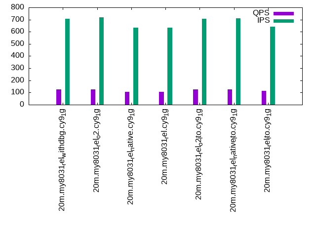

This is a report for the insert benchmark with 20M docs and 1 client(s). It is generated by scripts (bash, awk, sed) and Tufte might not be impressed. An overview of the insert benchmark is here and a short update is here. Below, by DBMS, I mean DBMS+version.config. An example is my8020.c10b40 where my means MySQL, 8020 is version 8.0.20 and c10b40 is the name for the configuration file.
The test server has 8 AMD cores, 16G RAM and an NVMe SSD. It is described here as the Beelink. The benchmark was run with 1 client and there were 1 or 2 connections per client (1 for queries, 1 for inserts). The benchmark loads 20M rows without secondary indexes, creates secondary indexes, loads another 20M rows then does 3 read+write tests for one hour each that do queries as fast as possible with 100, 500 and then 1000 writes/second/client concurrent with the queries. There is 1 table. The database is cached by the OS but not by InnoDB. Clients and the DBMS share one server. The per-database configs are in the per-database subdirectories here.
The tested DBMS are:
The numbers are inserts/s for l.i0 and l.i1, indexed docs (or rows) /s for l.x and queries/s for q*.2. The values are the average rate over the entire test for inserts (IPS) and queries (QPS). The range of values for IPS and QPS is split into 3 parts: bottom 25%, middle 50%, top 25%. Values in the bottom 25% have a red background, values in the top 25% have a green background and values in the middle have no color. A gray background is used for values that can be ignored because the DBMS did not sustain the target insert rate. Red backgrounds are not used when the minimum value is within 80% of the max value.
| dbms | l.i0 | l.x | l.i1 | q100.1 | q500.1 | q1000.1 |
|---|---|---|---|---|---|---|
| 20m.my8031_rel_withdbg.cy9_1g | 59880 | 21202 | 2294 | 845 | 171 | 126 |
| 20m.my8031_rel_o2.cy9_1g | 56497 | 21383 | 2246 | 809 | 171 | 124 |
| 20m.my8031_rel_native.cy9_1g | 58309 | 20181 | 2066 | 776 | 136 | 104 |
| 20m.my8031_rel.cy9_1g | 58824 | 20040 | 2016 | 764 | 142 | 106 |
| 20m.my8031_rel_o2_lto.cy9_1g | 59172 | 21590 | 2287 | 851 | 172 | 126 |
| 20m.my8031_rel_native_lto.cy9_1g | 58480 | 21360 | 2314 | 885 | 174 | 126 |
| 20m.my8031_rel_lto.cy9_1g | 60423 | 20448 | 2062 | 761 | 147 | 112 |
This table has relative throughput, throughput for the DBMS relative to the DBMS in the first line, using the absolute throughput from the previous table.
| dbms | l.i0 | l.x | l.i1 | q100.1 | q500.1 | q1000.1 |
|---|---|---|---|---|---|---|
| 20m.my8031_rel_withdbg.cy9_1g | 1.00 | 1.00 | 1.00 | 1.00 | 1.00 | 1.00 |
| 20m.my8031_rel_o2.cy9_1g | 0.94 | 1.01 | 0.98 | 0.96 | 1.00 | 0.98 |
| 20m.my8031_rel_native.cy9_1g | 0.97 | 0.95 | 0.90 | 0.92 | 0.80 | 0.83 |
| 20m.my8031_rel.cy9_1g | 0.98 | 0.95 | 0.88 | 0.90 | 0.83 | 0.84 |
| 20m.my8031_rel_o2_lto.cy9_1g | 0.99 | 1.02 | 1.00 | 1.01 | 1.01 | 1.00 |
| 20m.my8031_rel_native_lto.cy9_1g | 0.98 | 1.01 | 1.01 | 1.05 | 1.02 | 1.00 |
| 20m.my8031_rel_lto.cy9_1g | 1.01 | 0.96 | 0.90 | 0.90 | 0.86 | 0.89 |
This lists the average rate of inserts/s for the tests that do inserts concurrent with queries. For such tests the query rate is listed in the table above. The read+write tests are setup so that the insert rate should match the target rate every second. Cells that are not at least 95% of the target have a red background to indicate a failure to satisfy the target.
| dbms | q100.1 | q500.1 | q1000.1 |
|---|---|---|---|
| my8031_rel_withdbg.cy9_1g | 100 | 496 | 707 |
| my8031_rel_o2.cy9_1g | 100 | 497 | 719 |
| my8031_rel_native.cy9_1g | 100 | 471 | 635 |
| my8031_rel.cy9_1g | 100 | 473 | 635 |
| my8031_rel_o2_lto.cy9_1g | 100 | 498 | 708 |
| my8031_rel_native_lto.cy9_1g | 100 | 496 | 709 |
| my8031_rel_lto.cy9_1g | 100 | 474 | 640 |
| target | 100 | 500 | 1000 |
l.i0: load without secondary indexes. Graphs for performance per 1-second interval are here.
Average throughput:
Insert response time histogram: each cell has the percentage of responses that take <= the time in the header and max is the max response time in seconds. For the max column values in the top 25% of the range have a red background and in the bottom 25% of the range have a green background. The red background is not used when the min value is within 80% of the max value.
| dbms | 256us | 1ms | 4ms | 16ms | 64ms | 256ms | 1s | 4s | 16s | gt | max |
|---|---|---|---|---|---|---|---|---|---|---|---|
| my8031_rel_withdbg.cy9_1g | 99.398 | 0.454 | 0.144 | 0.005 | 0.089 | ||||||
| my8031_rel_o2.cy9_1g | 99.386 | 0.466 | 0.143 | 0.005 | 0.092 | ||||||
| my8031_rel_native.cy9_1g | 99.387 | 0.459 | 0.148 | 0.005 | 0.094 | ||||||
| my8031_rel.cy9_1g | 99.391 | 0.458 | 0.143 | 0.008 | 0.143 | ||||||
| my8031_rel_o2_lto.cy9_1g | 99.395 | 0.470 | 0.132 | 0.003 | 0.098 | ||||||
| my8031_rel_native_lto.cy9_1g | 99.394 | 0.471 | 0.132 | 0.003 | 0.123 | ||||||
| my8031_rel_lto.cy9_1g | 99.395 | 0.445 | 0.151 | 0.008 | 0.116 |
Performance metrics for the DBMS listed above. Some are normalized by throughput, others are not. Legend for results is here.
ips qps rps rmbps wps wmbps rpq rkbpq wpi wkbpi csps cpups cspq cpupq dbgb1 dbgb2 rss maxop p50 p99 tag 59880 0 0 0.0 175.2 18.2 0.000 0.000 0.003 0.312 7109 20.7 0.119 28 1.3 9.9 1.3 0.089 60455 53241 20m.my8031_rel_withdbg.cy9_1g 56497 0 0 0.0 168.4 17.2 0.000 0.000 0.003 0.313 6785 20.9 0.120 30 1.3 9.9 1.4 0.092 57035 50542 20m.my8031_rel_o2.cy9_1g 58309 0 0 0.0 171.6 17.8 0.000 0.000 0.003 0.312 6964 20.9 0.119 29 1.3 9.9 1.4 0.094 58833 41140 20m.my8031_rel_native.cy9_1g 58824 0 0 0.0 173.8 17.9 0.000 0.000 0.003 0.312 7027 20.8 0.119 28 1.3 9.9 1.4 0.143 59533 48666 20m.my8031_rel.cy9_1g 59172 0 0 0.0 173.9 18.1 0.000 0.000 0.003 0.312 7064 20.7 0.119 28 1.3 9.9 1.3 0.098 59832 49646 20m.my8031_rel_o2_lto.cy9_1g 58480 0 0 0.0 172.4 17.8 0.000 0.000 0.003 0.311 6975 21.1 0.119 29 1.3 9.9 1.3 0.123 58933 49444 20m.my8031_rel_native_lto.cy9_1g 60423 0 0 0.0 178.6 18.4 0.000 0.000 0.003 0.312 7197 21.0 0.119 28 1.3 9.9 1.4 0.116 61231 50042 20m.my8031_rel_lto.cy9_1g
l.x: create secondary indexes.
Average throughput:
Performance metrics for the DBMS listed above. Some are normalized by throughput, others are not. Legend for results is here.
ips qps rps rmbps wps wmbps rpq rkbpq wpi wkbpi csps cpups cspq cpupq dbgb1 dbgb2 rss maxop p50 p99 tag 21202 0 110 7.3 575.0 23.7 0.005 0.355 0.027 1.145 4363 8.0 0.206 30 3.0 11.5 1.5 0.013 NA NA 20m.my8031_rel_withdbg.cy9_1g 21383 0 111 7.4 577.0 23.9 0.005 0.355 0.027 1.146 4396 8.2 0.206 31 3.0 11.5 1.5 0.015 NA NA 20m.my8031_rel_o2.cy9_1g 20181 0 104 7.0 542.7 22.4 0.005 0.354 0.027 1.137 4178 7.3 0.207 29 3.0 11.5 1.5 0.017 NA NA 20m.my8031_rel_native.cy9_1g 20040 0 104 6.9 541.8 22.4 0.005 0.354 0.027 1.144 4162 7.7 0.208 31 3.0 11.5 1.5 0.012 NA NA 20m.my8031_rel.cy9_1g 21590 0 111 7.5 578.2 23.9 0.005 0.354 0.027 1.132 4418 7.9 0.205 29 3.0 11.5 1.5 0.012 NA NA 20m.my8031_rel_o2_lto.cy9_1g 21360 0 110 7.4 575.6 23.7 0.005 0.354 0.027 1.137 4408 6.8 0.206 25 3.0 11.5 1.5 0.012 NA NA 20m.my8031_rel_native_lto.cy9_1g 20448 0 106 7.1 550.3 22.7 0.005 0.354 0.027 1.135 4261 5.9 0.208 23 3.0 11.5 1.5 0.014 NA NA 20m.my8031_rel_lto.cy9_1g
l.i1: continue load after secondary indexes created. Graphs for performance per 1-second interval are here.
Average throughput:
Insert response time histogram: each cell has the percentage of responses that take <= the time in the header and max is the max response time in seconds. For the max column values in the top 25% of the range have a red background and in the bottom 25% of the range have a green background. The red background is not used when the min value is within 80% of the max value.
| dbms | 256us | 1ms | 4ms | 16ms | 64ms | 256ms | 1s | 4s | 16s | gt | max |
|---|---|---|---|---|---|---|---|---|---|---|---|
| my8031_rel_withdbg.cy9_1g | 0.409 | 59.982 | 34.099 | 5.362 | 0.127 | 0.021 | 0.001 | 4.808 | |||
| my8031_rel_o2.cy9_1g | 0.250 | 58.865 | 35.349 | 5.383 | 0.132 | 0.021 | nonzero | 4.191 | |||
| my8031_rel_native.cy9_1g | 0.273 | 57.452 | 35.008 | 7.081 | 0.154 | 0.031 | nonzero | 4.130 | |||
| my8031_rel.cy9_1g | 0.309 | 57.037 | 34.867 | 7.587 | 0.168 | 0.031 | 0.001 | 5.966 | |||
| my8031_rel_o2_lto.cy9_1g | 0.427 | 59.720 | 34.291 | 5.418 | 0.118 | 0.025 | 3.718 | ||||
| my8031_rel_native_lto.cy9_1g | 0.472 | 60.394 | 33.578 | 5.409 | 0.122 | 0.025 | 3.057 | ||||
| my8031_rel_lto.cy9_1g | 0.464 | 58.181 | 33.658 | 7.508 | 0.157 | 0.030 | 0.001 | 4.873 |
Performance metrics for the DBMS listed above. Some are normalized by throughput, others are not. Legend for results is here.
ips qps rps rmbps wps wmbps rpq rkbpq wpi wkbpi csps cpups cspq cpupq dbgb1 dbgb2 rss maxop p50 p99 tag 2294 0 0 0.0 1040.0 21.2 0.000 0.000 0.453 9.457 5901 8.1 2.572 283 7.7 16.3 1.5 4.808 2397 50 20m.my8031_rel_withdbg.cy9_1g 2246 0 0 0.0 1033.9 21.0 0.000 0.000 0.460 9.566 5856 8.2 2.607 292 7.7 16.3 1.5 4.191 2347 50 20m.my8031_rel_o2.cy9_1g 2066 0 0 0.0 917.8 18.8 0.000 0.001 0.444 9.302 5304 7.5 2.567 290 7.7 16.3 1.5 4.130 2197 50 20m.my8031_rel_native.cy9_1g 2016 0 0 0.0 891.9 18.3 0.000 0.000 0.442 9.276 5177 7.3 2.568 290 7.7 16.3 1.5 5.966 2098 0 20m.my8031_rel.cy9_1g 2287 0 0 0.0 1041.0 21.2 0.000 0.000 0.455 9.487 5886 8.1 2.574 283 7.7 16.3 1.5 3.718 2397 50 20m.my8031_rel_o2_lto.cy9_1g 2314 0 0 0.0 1039.1 21.2 0.000 0.001 0.449 9.377 5875 8.0 2.539 277 7.7 16.3 1.5 3.057 2447 50 20m.my8031_rel_native_lto.cy9_1g 2062 0 0 0.0 897.0 18.4 0.000 0.000 0.435 9.154 5191 7.2 2.517 279 7.7 16.3 1.5 4.873 2148 0 20m.my8031_rel_lto.cy9_1g
q100.1: range queries with 100 insert/s per client. Graphs for performance per 1-second interval are here.
Average throughput:
Query response time histogram: each cell has the percentage of responses that take <= the time in the header and max is the max response time in seconds. For max values in the top 25% of the range have a red background and in the bottom 25% of the range have a green background. The red background is not used when the min value is within 80% of the max value.
| dbms | 256us | 1ms | 4ms | 16ms | 64ms | 256ms | 1s | 4s | 16s | gt | max |
|---|---|---|---|---|---|---|---|---|---|---|---|
| my8031_rel_withdbg.cy9_1g | 1.683 | 93.488 | 0.630 | 2.496 | 1.656 | 0.047 | nonzero | 0.472 | |||
| my8031_rel_o2.cy9_1g | 1.000 | 93.914 | 0.691 | 2.634 | 1.708 | 0.053 | nonzero | 0.262 | |||
| my8031_rel_native.cy9_1g | 0.968 | 93.853 | 0.705 | 2.577 | 1.819 | 0.079 | nonzero | 0.302 | |||
| my8031_rel.cy9_1g | 0.940 | 93.720 | 0.733 | 2.667 | 1.859 | 0.081 | nonzero | 0.288 | |||
| my8031_rel_o2_lto.cy9_1g | 1.968 | 93.192 | 0.639 | 2.540 | 1.614 | 0.046 | nonzero | 0.312 | |||
| my8031_rel_native_lto.cy9_1g | 3.380 | 92.025 | 0.601 | 2.418 | 1.531 | 0.046 | nonzero | 0.272 | |||
| my8031_rel_lto.cy9_1g | 2.825 | 91.908 | 0.658 | 2.636 | 1.885 | 0.086 | 0.002 | 0.457 |
Insert response time histogram: each cell has the percentage of responses that take <= the time in the header and max is the max response time in seconds. For max values in the top 25% of the range have a red background and in the bottom 25% of the range have a green background. The red background is not used when the min value is within 80% of the max value.
| dbms | 256us | 1ms | 4ms | 16ms | 64ms | 256ms | 1s | 4s | 16s | gt | max |
|---|---|---|---|---|---|---|---|---|---|---|---|
| my8031_rel_withdbg.cy9_1g | 0.111 | 42.750 | 12.056 | 38.056 | 7.028 | 0.552 | |||||
| my8031_rel_o2.cy9_1g | 0.028 | 38.250 | 13.694 | 40.750 | 7.278 | 0.705 | |||||
| my8031_rel_native.cy9_1g | 0.083 | 38.778 | 13.278 | 38.333 | 9.528 | 0.659 | |||||
| my8031_rel.cy9_1g | 0.083 | 36.278 | 14.389 | 39.778 | 9.472 | 0.892 | |||||
| my8031_rel_o2_lto.cy9_1g | 0.056 | 41.083 | 12.111 | 39.861 | 6.889 | 0.522 | |||||
| my8031_rel_native_lto.cy9_1g | 0.306 | 45.750 | 12.667 | 34.306 | 6.972 | 0.843 | |||||
| my8031_rel_lto.cy9_1g | 0.472 | 36.806 | 12.111 | 39.944 | 10.639 | 0.028 | 1.175 |
Performance metrics for the DBMS listed above. Some are normalized by throughput, others are not. Legend for results is here.
ips qps rps rmbps wps wmbps rpq rkbpq wpi wkbpi csps cpups cspq cpupq dbgb1 dbgb2 rss maxop p50 p99 tag 100 845 1 0.0 673.4 12.4 0.001 0.017 6.747 127.146 7079 7.3 8.381 691 7.9 16.5 1.5 0.472 719 32 20m.my8031_rel_withdbg.cy9_1g 100 809 1 0.0 671.7 12.3 0.002 0.022 6.730 126.570 6956 7.2 8.602 712 7.9 16.5 1.5 0.262 863 32 20m.my8031_rel_o2.cy9_1g 100 776 1 0.0 657.1 12.1 0.001 0.020 6.584 124.100 6746 7.1 8.698 732 7.9 16.5 1.5 0.302 607 32 20m.my8031_rel_native.cy9_1g 100 764 1 0.0 662.4 12.2 0.002 0.026 6.638 124.962 6729 7.0 8.811 733 7.9 16.5 1.5 0.288 703 16 20m.my8031_rel.cy9_1g 100 851 1 0.0 670.1 12.3 0.001 0.020 6.715 126.419 7095 7.3 8.334 686 7.9 16.5 1.5 0.312 735 32 20m.my8031_rel_o2_lto.cy9_1g 100 885 1 0.0 673.4 12.4 0.001 0.016 6.748 126.866 7234 7.3 8.174 660 7.9 16.5 1.5 0.272 640 32 20m.my8031_rel_native_lto.cy9_1g 100 761 1 0.0 660.9 12.2 0.002 0.025 6.622 124.922 6713 6.8 8.817 714 7.9 16.5 1.5 0.457 527 16 20m.my8031_rel_lto.cy9_1g
q500.1: range queries with 500 insert/s per client. Graphs for performance per 1-second interval are here.
Average throughput:
Query response time histogram: each cell has the percentage of responses that take <= the time in the header and max is the max response time in seconds. For max values in the top 25% of the range have a red background and in the bottom 25% of the range have a green background. The red background is not used when the min value is within 80% of the max value.
| dbms | 256us | 1ms | 4ms | 16ms | 64ms | 256ms | 1s | 4s | 16s | gt | max |
|---|---|---|---|---|---|---|---|---|---|---|---|
| my8031_rel_withdbg.cy9_1g | 0.341 | 64.116 | 2.668 | 21.157 | 11.473 | 0.245 | nonzero | 0.264 | |||
| my8031_rel_o2.cy9_1g | 0.104 | 64.107 | 3.021 | 21.205 | 11.284 | 0.280 | 0.176 | ||||
| my8031_rel_native.cy9_1g | 0.202 | 61.008 | 3.079 | 20.243 | 14.655 | 0.810 | 0.003 | 0.340 | |||
| my8031_rel.cy9_1g | 0.204 | 62.339 | 2.907 | 19.705 | 14.114 | 0.729 | 0.001 | 0.312 | |||
| my8031_rel_o2_lto.cy9_1g | 0.281 | 64.456 | 2.610 | 21.008 | 11.394 | 0.250 | 0.160 | ||||
| my8031_rel_native_lto.cy9_1g | 0.651 | 64.514 | 2.421 | 20.840 | 11.350 | 0.225 | 0.223 | ||||
| my8031_rel_lto.cy9_1g | 0.664 | 63.198 | 2.544 | 19.525 | 13.426 | 0.643 | 0.001 | 0.301 |
Insert response time histogram: each cell has the percentage of responses that take <= the time in the header and max is the max response time in seconds. For max values in the top 25% of the range have a red background and in the bottom 25% of the range have a green background. The red background is not used when the min value is within 80% of the max value.
| dbms | 256us | 1ms | 4ms | 16ms | 64ms | 256ms | 1s | 4s | 16s | gt | max |
|---|---|---|---|---|---|---|---|---|---|---|---|
| my8031_rel_withdbg.cy9_1g | 0.044 | 16.144 | 28.383 | 55.228 | 0.200 | 0.684 | |||||
| my8031_rel_o2.cy9_1g | 0.056 | 16.528 | 29.544 | 53.661 | 0.211 | 0.562 | |||||
| my8031_rel_native.cy9_1g | 0.056 | 15.194 | 25.978 | 57.583 | 1.189 | 0.747 | |||||
| my8031_rel.cy9_1g | 0.083 | 14.750 | 25.911 | 58.239 | 1.017 | 0.634 | |||||
| my8031_rel_o2_lto.cy9_1g | 0.083 | 17.039 | 27.317 | 55.389 | 0.172 | 0.438 | |||||
| my8031_rel_native_lto.cy9_1g | 0.044 | 17.817 | 26.950 | 54.989 | 0.200 | 0.592 | |||||
| my8031_rel_lto.cy9_1g | 0.061 | 15.367 | 25.172 | 58.206 | 1.194 | 0.826 |
Performance metrics for the DBMS listed above. Some are normalized by throughput, others are not. Legend for results is here.
ips qps rps rmbps wps wmbps rpq rkbpq wpi wkbpi csps cpups cspq cpupq dbgb1 dbgb2 rss maxop p50 p99 tag 496 171 5 0.1 1008.0 19.2 0.029 0.464 2.031 39.677 6349 5.7 37.109 2665 8.3 16.9 1.5 0.264 96 48 20m.my8031_rel_withdbg.cy9_1g 497 171 5 0.1 1007.1 19.2 0.029 0.402 2.027 39.574 6338 5.7 37.089 2668 8.3 16.9 1.5 0.176 96 48 20m.my8031_rel_o2.cy9_1g 471 136 5 0.1 880.9 16.9 0.036 0.485 1.872 36.781 5599 4.9 41.256 2889 8.3 16.9 1.5 0.340 80 32 20m.my8031_rel_native.cy9_1g 473 142 5 0.1 890.5 17.1 0.032 0.452 1.883 36.980 5672 5.0 40.087 2827 8.3 16.9 1.5 0.312 80 32 20m.my8031_rel.cy9_1g 498 172 6 0.1 1008.0 19.2 0.032 0.449 2.026 39.585 6345 5.6 36.912 2606 8.3 16.9 1.5 0.160 96 48 20m.my8031_rel_o2_lto.cy9_1g 496 174 4 0.1 1012.6 19.3 0.024 0.412 2.040 39.820 6383 5.6 36.684 2575 8.3 16.9 1.5 0.223 96 48 20m.my8031_rel_native_lto.cy9_1g 474 147 5 0.1 911.4 17.4 0.034 0.497 1.922 37.626 5782 5.1 39.229 2768 8.3 16.9 1.5 0.301 80 16 20m.my8031_rel_lto.cy9_1g
q1000.1: range queries with 1000 insert/s per client. Graphs for performance per 1-second interval are here.
Average throughput:
Query response time histogram: each cell has the percentage of responses that take <= the time in the header and max is the max response time in seconds. For max values in the top 25% of the range have a red background and in the bottom 25% of the range have a green background. The red background is not used when the min value is within 80% of the max value.
| dbms | 256us | 1ms | 4ms | 16ms | 64ms | 256ms | 1s | 4s | 16s | gt | max |
|---|---|---|---|---|---|---|---|---|---|---|---|
| my8031_rel_withdbg.cy9_1g | 0.074 | 54.312 | 5.418 | 23.604 | 15.974 | 0.618 | 0.001 | 0.274 | |||
| my8031_rel_o2.cy9_1g | 0.022 | 52.034 | 6.588 | 24.644 | 16.072 | 0.640 | 0.206 | ||||
| my8031_rel_native.cy9_1g | 0.016 | 51.100 | 6.046 | 22.600 | 18.774 | 1.454 | 0.010 | 0.481 | |||
| my8031_rel.cy9_1g | 0.026 | 51.998 | 5.972 | 21.885 | 18.642 | 1.473 | 0.005 | 0.474 | |||
| my8031_rel_o2_lto.cy9_1g | 0.054 | 53.821 | 5.441 | 24.037 | 16.069 | 0.578 | nonzero | 0.309 | |||
| my8031_rel_native_lto.cy9_1g | 0.140 | 54.417 | 5.027 | 23.830 | 15.972 | 0.615 | nonzero | 0.279 | |||
| my8031_rel_lto.cy9_1g | 0.129 | 54.338 | 4.776 | 21.816 | 17.771 | 1.160 | 0.010 | 0.478 |
Insert response time histogram: each cell has the percentage of responses that take <= the time in the header and max is the max response time in seconds. For max values in the top 25% of the range have a red background and in the bottom 25% of the range have a green background. The red background is not used when the min value is within 80% of the max value.
| dbms | 256us | 1ms | 4ms | 16ms | 64ms | 256ms | 1s | 4s | 16s | gt | max |
|---|---|---|---|---|---|---|---|---|---|---|---|
| my8031_rel_withdbg.cy9_1g | 0.017 | 23.019 | 30.853 | 45.942 | 0.169 | 0.451 | |||||
| my8031_rel_o2.cy9_1g | 21.514 | 33.208 | 45.194 | 0.083 | 0.376 | ||||||
| my8031_rel_native.cy9_1g | 0.003 | 20.133 | 29.211 | 49.719 | 0.933 | 0.739 | |||||
| my8031_rel.cy9_1g | 0.011 | 20.322 | 29.144 | 49.628 | 0.894 | 0.706 | |||||
| my8031_rel_o2_lto.cy9_1g | 0.011 | 22.306 | 31.200 | 46.350 | 0.133 | 0.476 | |||||
| my8031_rel_native_lto.cy9_1g | 0.008 | 22.656 | 30.997 | 46.144 | 0.194 | 0.424 | |||||
| my8031_rel_lto.cy9_1g | 0.022 | 21.589 | 28.228 | 49.319 | 0.842 | 0.970 |
Performance metrics for the DBMS listed above. Some are normalized by throughput, others are not. Legend for results is here.
ips qps rps rmbps wps wmbps rpq rkbpq wpi wkbpi csps cpups cspq cpupq dbgb1 dbgb2 rss maxop p50 p99 tag 707 126 3 0.0 1018.5 19.6 0.022 0.341 1.440 28.431 6232 5.9 49.425 3743 8.8 17.3 1.5 0.274 80 32 20m.my8031_rel_withdbg.cy9_1g 719 124 3 0.0 1018.5 19.7 0.023 0.336 1.416 28.007 6239 6.0 50.235 3865 8.8 17.3 1.5 0.206 80 32 20m.my8031_rel_o2.cy9_1g 635 104 2 0.0 887.3 17.2 0.022 0.321 1.397 27.657 5510 5.2 52.726 3981 8.8 17.3 1.5 0.481 64 16 20m.my8031_rel_native.cy9_1g 635 106 3 0.0 890.9 17.2 0.024 0.355 1.404 27.801 5523 5.2 52.305 3939 8.8 17.3 1.5 0.474 64 16 20m.my8031_rel.cy9_1g 708 126 3 0.0 1020.0 19.7 0.024 0.364 1.440 28.461 6241 5.9 49.528 3746 8.8 17.3 1.5 0.309 80 32 20m.my8031_rel_o2_lto.cy9_1g 709 126 2 0.0 1024.6 19.7 0.020 0.322 1.444 28.488 6265 5.9 49.642 3740 8.8 17.3 1.5 0.279 80 32 20m.my8031_rel_native_lto.cy9_1g 640 112 3 0.0 923.0 17.8 0.023 0.353 1.442 28.453 5701 5.3 50.995 3793 8.8 17.3 1.5 0.478 64 16 20m.my8031_rel_lto.cy9_1g
l.i0: load without secondary indexes
Performance metrics for all DBMS, not just the ones listed above. Some are normalized by throughput, others are not. Legend for results is here.
ips qps rps rmbps wps wmbps rpq rkbpq wpi wkbpi csps cpups cspq cpupq dbgb1 dbgb2 rss maxop p50 p99 tag 59880 0 0 0.0 175.2 18.2 0.000 0.000 0.003 0.312 7109 20.7 0.119 28 1.3 9.9 1.3 0.089 60455 53241 20m.my8031_rel_withdbg.cy9_1g 56497 0 0 0.0 168.4 17.2 0.000 0.000 0.003 0.313 6785 20.9 0.120 30 1.3 9.9 1.4 0.092 57035 50542 20m.my8031_rel_o2.cy9_1g 58309 0 0 0.0 171.6 17.8 0.000 0.000 0.003 0.312 6964 20.9 0.119 29 1.3 9.9 1.4 0.094 58833 41140 20m.my8031_rel_native.cy9_1g 58824 0 0 0.0 173.8 17.9 0.000 0.000 0.003 0.312 7027 20.8 0.119 28 1.3 9.9 1.4 0.143 59533 48666 20m.my8031_rel.cy9_1g 59172 0 0 0.0 173.9 18.1 0.000 0.000 0.003 0.312 7064 20.7 0.119 28 1.3 9.9 1.3 0.098 59832 49646 20m.my8031_rel_o2_lto.cy9_1g 58480 0 0 0.0 172.4 17.8 0.000 0.000 0.003 0.311 6975 21.1 0.119 29 1.3 9.9 1.3 0.123 58933 49444 20m.my8031_rel_native_lto.cy9_1g 60423 0 0 0.0 178.6 18.4 0.000 0.000 0.003 0.312 7197 21.0 0.119 28 1.3 9.9 1.4 0.116 61231 50042 20m.my8031_rel_lto.cy9_1g
l.x: create secondary indexes
Performance metrics for all DBMS, not just the ones listed above. Some are normalized by throughput, others are not. Legend for results is here.
ips qps rps rmbps wps wmbps rpq rkbpq wpi wkbpi csps cpups cspq cpupq dbgb1 dbgb2 rss maxop p50 p99 tag 21202 0 110 7.3 575.0 23.7 0.005 0.355 0.027 1.145 4363 8.0 0.206 30 3.0 11.5 1.5 0.013 NA NA 20m.my8031_rel_withdbg.cy9_1g 21383 0 111 7.4 577.0 23.9 0.005 0.355 0.027 1.146 4396 8.2 0.206 31 3.0 11.5 1.5 0.015 NA NA 20m.my8031_rel_o2.cy9_1g 20181 0 104 7.0 542.7 22.4 0.005 0.354 0.027 1.137 4178 7.3 0.207 29 3.0 11.5 1.5 0.017 NA NA 20m.my8031_rel_native.cy9_1g 20040 0 104 6.9 541.8 22.4 0.005 0.354 0.027 1.144 4162 7.7 0.208 31 3.0 11.5 1.5 0.012 NA NA 20m.my8031_rel.cy9_1g 21590 0 111 7.5 578.2 23.9 0.005 0.354 0.027 1.132 4418 7.9 0.205 29 3.0 11.5 1.5 0.012 NA NA 20m.my8031_rel_o2_lto.cy9_1g 21360 0 110 7.4 575.6 23.7 0.005 0.354 0.027 1.137 4408 6.8 0.206 25 3.0 11.5 1.5 0.012 NA NA 20m.my8031_rel_native_lto.cy9_1g 20448 0 106 7.1 550.3 22.7 0.005 0.354 0.027 1.135 4261 5.9 0.208 23 3.0 11.5 1.5 0.014 NA NA 20m.my8031_rel_lto.cy9_1g
l.i1: continue load after secondary indexes created
Performance metrics for all DBMS, not just the ones listed above. Some are normalized by throughput, others are not. Legend for results is here.
ips qps rps rmbps wps wmbps rpq rkbpq wpi wkbpi csps cpups cspq cpupq dbgb1 dbgb2 rss maxop p50 p99 tag 2294 0 0 0.0 1040.0 21.2 0.000 0.000 0.453 9.457 5901 8.1 2.572 283 7.7 16.3 1.5 4.808 2397 50 20m.my8031_rel_withdbg.cy9_1g 2246 0 0 0.0 1033.9 21.0 0.000 0.000 0.460 9.566 5856 8.2 2.607 292 7.7 16.3 1.5 4.191 2347 50 20m.my8031_rel_o2.cy9_1g 2066 0 0 0.0 917.8 18.8 0.000 0.001 0.444 9.302 5304 7.5 2.567 290 7.7 16.3 1.5 4.130 2197 50 20m.my8031_rel_native.cy9_1g 2016 0 0 0.0 891.9 18.3 0.000 0.000 0.442 9.276 5177 7.3 2.568 290 7.7 16.3 1.5 5.966 2098 0 20m.my8031_rel.cy9_1g 2287 0 0 0.0 1041.0 21.2 0.000 0.000 0.455 9.487 5886 8.1 2.574 283 7.7 16.3 1.5 3.718 2397 50 20m.my8031_rel_o2_lto.cy9_1g 2314 0 0 0.0 1039.1 21.2 0.000 0.001 0.449 9.377 5875 8.0 2.539 277 7.7 16.3 1.5 3.057 2447 50 20m.my8031_rel_native_lto.cy9_1g 2062 0 0 0.0 897.0 18.4 0.000 0.000 0.435 9.154 5191 7.2 2.517 279 7.7 16.3 1.5 4.873 2148 0 20m.my8031_rel_lto.cy9_1g
q100.1: range queries with 100 insert/s per client
Performance metrics for all DBMS, not just the ones listed above. Some are normalized by throughput, others are not. Legend for results is here.
ips qps rps rmbps wps wmbps rpq rkbpq wpi wkbpi csps cpups cspq cpupq dbgb1 dbgb2 rss maxop p50 p99 tag 100 845 1 0.0 673.4 12.4 0.001 0.017 6.747 127.146 7079 7.3 8.381 691 7.9 16.5 1.5 0.472 719 32 20m.my8031_rel_withdbg.cy9_1g 100 809 1 0.0 671.7 12.3 0.002 0.022 6.730 126.570 6956 7.2 8.602 712 7.9 16.5 1.5 0.262 863 32 20m.my8031_rel_o2.cy9_1g 100 776 1 0.0 657.1 12.1 0.001 0.020 6.584 124.100 6746 7.1 8.698 732 7.9 16.5 1.5 0.302 607 32 20m.my8031_rel_native.cy9_1g 100 764 1 0.0 662.4 12.2 0.002 0.026 6.638 124.962 6729 7.0 8.811 733 7.9 16.5 1.5 0.288 703 16 20m.my8031_rel.cy9_1g 100 851 1 0.0 670.1 12.3 0.001 0.020 6.715 126.419 7095 7.3 8.334 686 7.9 16.5 1.5 0.312 735 32 20m.my8031_rel_o2_lto.cy9_1g 100 885 1 0.0 673.4 12.4 0.001 0.016 6.748 126.866 7234 7.3 8.174 660 7.9 16.5 1.5 0.272 640 32 20m.my8031_rel_native_lto.cy9_1g 100 761 1 0.0 660.9 12.2 0.002 0.025 6.622 124.922 6713 6.8 8.817 714 7.9 16.5 1.5 0.457 527 16 20m.my8031_rel_lto.cy9_1g
q500.1: range queries with 500 insert/s per client
Performance metrics for all DBMS, not just the ones listed above. Some are normalized by throughput, others are not. Legend for results is here.
ips qps rps rmbps wps wmbps rpq rkbpq wpi wkbpi csps cpups cspq cpupq dbgb1 dbgb2 rss maxop p50 p99 tag 496 171 5 0.1 1008.0 19.2 0.029 0.464 2.031 39.677 6349 5.7 37.109 2665 8.3 16.9 1.5 0.264 96 48 20m.my8031_rel_withdbg.cy9_1g 497 171 5 0.1 1007.1 19.2 0.029 0.402 2.027 39.574 6338 5.7 37.089 2668 8.3 16.9 1.5 0.176 96 48 20m.my8031_rel_o2.cy9_1g 471 136 5 0.1 880.9 16.9 0.036 0.485 1.872 36.781 5599 4.9 41.256 2889 8.3 16.9 1.5 0.340 80 32 20m.my8031_rel_native.cy9_1g 473 142 5 0.1 890.5 17.1 0.032 0.452 1.883 36.980 5672 5.0 40.087 2827 8.3 16.9 1.5 0.312 80 32 20m.my8031_rel.cy9_1g 498 172 6 0.1 1008.0 19.2 0.032 0.449 2.026 39.585 6345 5.6 36.912 2606 8.3 16.9 1.5 0.160 96 48 20m.my8031_rel_o2_lto.cy9_1g 496 174 4 0.1 1012.6 19.3 0.024 0.412 2.040 39.820 6383 5.6 36.684 2575 8.3 16.9 1.5 0.223 96 48 20m.my8031_rel_native_lto.cy9_1g 474 147 5 0.1 911.4 17.4 0.034 0.497 1.922 37.626 5782 5.1 39.229 2768 8.3 16.9 1.5 0.301 80 16 20m.my8031_rel_lto.cy9_1g
q1000.1: range queries with 1000 insert/s per client
Performance metrics for all DBMS, not just the ones listed above. Some are normalized by throughput, others are not. Legend for results is here.
ips qps rps rmbps wps wmbps rpq rkbpq wpi wkbpi csps cpups cspq cpupq dbgb1 dbgb2 rss maxop p50 p99 tag 707 126 3 0.0 1018.5 19.6 0.022 0.341 1.440 28.431 6232 5.9 49.425 3743 8.8 17.3 1.5 0.274 80 32 20m.my8031_rel_withdbg.cy9_1g 719 124 3 0.0 1018.5 19.7 0.023 0.336 1.416 28.007 6239 6.0 50.235 3865 8.8 17.3 1.5 0.206 80 32 20m.my8031_rel_o2.cy9_1g 635 104 2 0.0 887.3 17.2 0.022 0.321 1.397 27.657 5510 5.2 52.726 3981 8.8 17.3 1.5 0.481 64 16 20m.my8031_rel_native.cy9_1g 635 106 3 0.0 890.9 17.2 0.024 0.355 1.404 27.801 5523 5.2 52.305 3939 8.8 17.3 1.5 0.474 64 16 20m.my8031_rel.cy9_1g 708 126 3 0.0 1020.0 19.7 0.024 0.364 1.440 28.461 6241 5.9 49.528 3746 8.8 17.3 1.5 0.309 80 32 20m.my8031_rel_o2_lto.cy9_1g 709 126 2 0.0 1024.6 19.7 0.020 0.322 1.444 28.488 6265 5.9 49.642 3740 8.8 17.3 1.5 0.279 80 32 20m.my8031_rel_native_lto.cy9_1g 640 112 3 0.0 923.0 17.8 0.023 0.353 1.442 28.453 5701 5.3 50.995 3793 8.8 17.3 1.5 0.478 64 16 20m.my8031_rel_lto.cy9_1g
Insert response time histogram
256us 1ms 4ms 16ms 64ms 256ms 1s 4s 16s gt max tag 0.000 0.000 99.398 0.454 0.144 0.005 0.000 0.000 0.000 0.000 0.089 my8031_rel_withdbg.cy9_1g 0.000 0.000 99.386 0.466 0.143 0.005 0.000 0.000 0.000 0.000 0.092 my8031_rel_o2.cy9_1g 0.000 0.000 99.387 0.459 0.148 0.005 0.000 0.000 0.000 0.000 0.094 my8031_rel_native.cy9_1g 0.000 0.000 99.391 0.458 0.143 0.008 0.000 0.000 0.000 0.000 0.143 my8031_rel.cy9_1g 0.000 0.000 99.395 0.470 0.132 0.003 0.000 0.000 0.000 0.000 0.098 my8031_rel_o2_lto.cy9_1g 0.000 0.000 99.394 0.471 0.132 0.003 0.000 0.000 0.000 0.000 0.123 my8031_rel_native_lto.cy9_1g 0.000 0.000 99.395 0.445 0.151 0.008 0.000 0.000 0.000 0.000 0.116 my8031_rel_lto.cy9_1g
TODO - determine whether there is data for create index response time
Insert response time histogram
256us 1ms 4ms 16ms 64ms 256ms 1s 4s 16s gt max tag 0.000 0.000 0.409 59.982 34.099 5.362 0.127 0.021 0.001 0.000 4.808 my8031_rel_withdbg.cy9_1g 0.000 0.000 0.250 58.865 35.349 5.383 0.132 0.021 nonzero 0.000 4.191 my8031_rel_o2.cy9_1g 0.000 0.000 0.273 57.452 35.008 7.081 0.154 0.031 nonzero 0.000 4.130 my8031_rel_native.cy9_1g 0.000 0.000 0.309 57.037 34.867 7.587 0.168 0.031 0.001 0.000 5.966 my8031_rel.cy9_1g 0.000 0.000 0.427 59.720 34.291 5.418 0.118 0.025 0.000 0.000 3.718 my8031_rel_o2_lto.cy9_1g 0.000 0.000 0.472 60.394 33.578 5.409 0.122 0.025 0.000 0.000 3.057 my8031_rel_native_lto.cy9_1g 0.000 0.000 0.464 58.181 33.658 7.508 0.157 0.030 0.001 0.000 4.873 my8031_rel_lto.cy9_1g
Query response time histogram
256us 1ms 4ms 16ms 64ms 256ms 1s 4s 16s gt max tag 1.683 93.488 0.630 2.496 1.656 0.047 nonzero 0.000 0.000 0.000 0.472 my8031_rel_withdbg.cy9_1g 1.000 93.914 0.691 2.634 1.708 0.053 nonzero 0.000 0.000 0.000 0.262 my8031_rel_o2.cy9_1g 0.968 93.853 0.705 2.577 1.819 0.079 nonzero 0.000 0.000 0.000 0.302 my8031_rel_native.cy9_1g 0.940 93.720 0.733 2.667 1.859 0.081 nonzero 0.000 0.000 0.000 0.288 my8031_rel.cy9_1g 1.968 93.192 0.639 2.540 1.614 0.046 nonzero 0.000 0.000 0.000 0.312 my8031_rel_o2_lto.cy9_1g 3.380 92.025 0.601 2.418 1.531 0.046 nonzero 0.000 0.000 0.000 0.272 my8031_rel_native_lto.cy9_1g 2.825 91.908 0.658 2.636 1.885 0.086 0.002 0.000 0.000 0.000 0.457 my8031_rel_lto.cy9_1g
Insert response time histogram
256us 1ms 4ms 16ms 64ms 256ms 1s 4s 16s gt max tag 0.000 0.000 0.111 42.750 12.056 38.056 7.028 0.000 0.000 0.000 0.552 my8031_rel_withdbg.cy9_1g 0.000 0.000 0.028 38.250 13.694 40.750 7.278 0.000 0.000 0.000 0.705 my8031_rel_o2.cy9_1g 0.000 0.000 0.083 38.778 13.278 38.333 9.528 0.000 0.000 0.000 0.659 my8031_rel_native.cy9_1g 0.000 0.000 0.083 36.278 14.389 39.778 9.472 0.000 0.000 0.000 0.892 my8031_rel.cy9_1g 0.000 0.000 0.056 41.083 12.111 39.861 6.889 0.000 0.000 0.000 0.522 my8031_rel_o2_lto.cy9_1g 0.000 0.000 0.306 45.750 12.667 34.306 6.972 0.000 0.000 0.000 0.843 my8031_rel_native_lto.cy9_1g 0.000 0.000 0.472 36.806 12.111 39.944 10.639 0.028 0.000 0.000 1.175 my8031_rel_lto.cy9_1g
Query response time histogram
256us 1ms 4ms 16ms 64ms 256ms 1s 4s 16s gt max tag 0.341 64.116 2.668 21.157 11.473 0.245 nonzero 0.000 0.000 0.000 0.264 my8031_rel_withdbg.cy9_1g 0.104 64.107 3.021 21.205 11.284 0.280 0.000 0.000 0.000 0.000 0.176 my8031_rel_o2.cy9_1g 0.202 61.008 3.079 20.243 14.655 0.810 0.003 0.000 0.000 0.000 0.340 my8031_rel_native.cy9_1g 0.204 62.339 2.907 19.705 14.114 0.729 0.001 0.000 0.000 0.000 0.312 my8031_rel.cy9_1g 0.281 64.456 2.610 21.008 11.394 0.250 0.000 0.000 0.000 0.000 0.160 my8031_rel_o2_lto.cy9_1g 0.651 64.514 2.421 20.840 11.350 0.225 0.000 0.000 0.000 0.000 0.223 my8031_rel_native_lto.cy9_1g 0.664 63.198 2.544 19.525 13.426 0.643 0.001 0.000 0.000 0.000 0.301 my8031_rel_lto.cy9_1g
Insert response time histogram
256us 1ms 4ms 16ms 64ms 256ms 1s 4s 16s gt max tag 0.000 0.000 0.044 16.144 28.383 55.228 0.200 0.000 0.000 0.000 0.684 my8031_rel_withdbg.cy9_1g 0.000 0.000 0.056 16.528 29.544 53.661 0.211 0.000 0.000 0.000 0.562 my8031_rel_o2.cy9_1g 0.000 0.000 0.056 15.194 25.978 57.583 1.189 0.000 0.000 0.000 0.747 my8031_rel_native.cy9_1g 0.000 0.000 0.083 14.750 25.911 58.239 1.017 0.000 0.000 0.000 0.634 my8031_rel.cy9_1g 0.000 0.000 0.083 17.039 27.317 55.389 0.172 0.000 0.000 0.000 0.438 my8031_rel_o2_lto.cy9_1g 0.000 0.000 0.044 17.817 26.950 54.989 0.200 0.000 0.000 0.000 0.592 my8031_rel_native_lto.cy9_1g 0.000 0.000 0.061 15.367 25.172 58.206 1.194 0.000 0.000 0.000 0.826 my8031_rel_lto.cy9_1g
Query response time histogram
256us 1ms 4ms 16ms 64ms 256ms 1s 4s 16s gt max tag 0.074 54.312 5.418 23.604 15.974 0.618 0.001 0.000 0.000 0.000 0.274 my8031_rel_withdbg.cy9_1g 0.022 52.034 6.588 24.644 16.072 0.640 0.000 0.000 0.000 0.000 0.206 my8031_rel_o2.cy9_1g 0.016 51.100 6.046 22.600 18.774 1.454 0.010 0.000 0.000 0.000 0.481 my8031_rel_native.cy9_1g 0.026 51.998 5.972 21.885 18.642 1.473 0.005 0.000 0.000 0.000 0.474 my8031_rel.cy9_1g 0.054 53.821 5.441 24.037 16.069 0.578 nonzero 0.000 0.000 0.000 0.309 my8031_rel_o2_lto.cy9_1g 0.140 54.417 5.027 23.830 15.972 0.615 nonzero 0.000 0.000 0.000 0.279 my8031_rel_native_lto.cy9_1g 0.129 54.338 4.776 21.816 17.771 1.160 0.010 0.000 0.000 0.000 0.478 my8031_rel_lto.cy9_1g
Insert response time histogram
256us 1ms 4ms 16ms 64ms 256ms 1s 4s 16s gt max tag 0.000 0.000 0.017 23.019 30.853 45.942 0.169 0.000 0.000 0.000 0.451 my8031_rel_withdbg.cy9_1g 0.000 0.000 0.000 21.514 33.208 45.194 0.083 0.000 0.000 0.000 0.376 my8031_rel_o2.cy9_1g 0.000 0.000 0.003 20.133 29.211 49.719 0.933 0.000 0.000 0.000 0.739 my8031_rel_native.cy9_1g 0.000 0.000 0.011 20.322 29.144 49.628 0.894 0.000 0.000 0.000 0.706 my8031_rel.cy9_1g 0.000 0.000 0.011 22.306 31.200 46.350 0.133 0.000 0.000 0.000 0.476 my8031_rel_o2_lto.cy9_1g 0.000 0.000 0.008 22.656 30.997 46.144 0.194 0.000 0.000 0.000 0.424 my8031_rel_native_lto.cy9_1g 0.000 0.000 0.022 21.589 28.228 49.319 0.842 0.000 0.000 0.000 0.970 my8031_rel_lto.cy9_1g